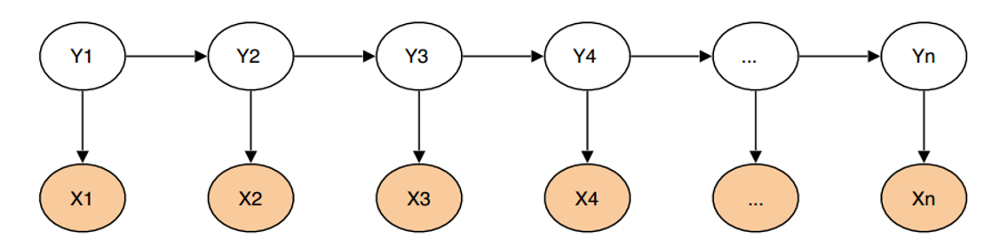
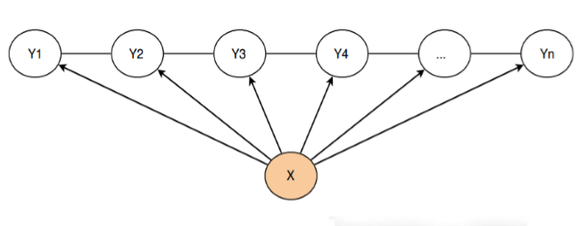
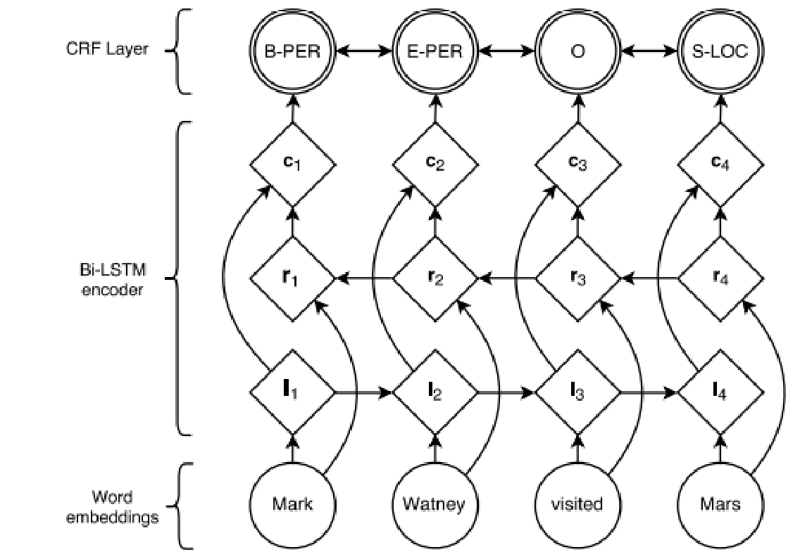

前言
简介
分词是NLP处理中最基础的一部分。如果不进行中文分词，我们对于语言的处理就会很难量化处理，进而难以使用数学知识去建立模型解决问题，这也是分词产生的重要原因。本文也将着重记录总结当前常用分词的相关算法。
拉丁语系与亚系语言
值得注意的是，我们常见的拉丁语系与亚系语言在分词上的最大区别就是拉丁语系并不需要分词，因为他们天然的就有着单词之间空格的划分，比如英语、法语等。而亚系语言则没有空格，比如中文，韩文以及日文等。因此分词重点是基于词典的基础上对于亚系语言的处理。
中文分词
中文分词（Chinese Word Segmentation）指的是将一个汉字序列切分成一个一个单独的词。分词就是将连续的字序列按照一定的规范重新组合成词序列的过程。
算法总览（持续更新）

基于词表的分词算法
正向最大匹配法FMM
❃ 含义
正向最大匹配法，对于输入的一端文本从左至右，以贪心的方式切分出当前位置上长度最大的词。正向匹配算法是基于词典的分词方法，其分词原理是：单词的颗粒度越大，所能表示的含义越确切。
❃ 主要步骤
- 一般从一个字符串的开始位置，选择一个最大长度的词长的片段，如果序列不足最大词长，则选择全部序列。
- 首先看该片段是否在词典中，如果是，则算出一个分出来的词，如果不是，则从右边开始，减少一个字符，然后看短一点的这个片段是否在词典中，依次循环，逐到只剩下一个字。
- 序列变为第2步骤截取分词后，剩下的部分序列重复步骤。
❃ 举例说明
正向最大匹配算法：从左到右将待分词文本中的几个连续字符与词表匹配，如果匹配上，则切分出一个词。但这里有一个问题：要做到最大匹配，并不是第一次匹配到就可以切分的。我们来举个例子。
待分词文本：sentence[]={“计”，”算”，”语”，”言”，”学”，”课”，”程”，”有”，”意”，”思”}
词表：dict[]={“计算”, “计算语言学”, “课程”, “有”, “意思”}
（真实的词表中会有成千上万个已经平时我们使用的分好的词语）
(1) 从sentence[1]开始，当扫描到sentence[2]的时候，发现”计算”已经在词表dict[]中了。但还不能切分出来，因为我们不知道后面的词语能不能组成更长的词(最大匹配)。
(2) 继续扫描content[3]，发现”计算语”并不是dict[]中的词。但是我们还不能确定是否前面找到的”计算语”已经是最大的词了。因为”计算语”是dict[2]的前缀。
(3) 扫描content[4]，发现”计算语言”并不是dict[]中的词。但是是dict[2]的前缀。继续扫描：
(3) 扫描content[5]，发现”计算语言学”是dict[]中的词。继续扫描下去：
(4) 当扫描content[6]的时候，发现”计算语言学课”并不是词表中的词，也不是词的前缀。因此可以切分出前面最大的词——“计算语言学”。
由此可见，最大匹配出的词必须保证下一个扫描不是词表中的词或词的前缀才可以结束。
❃ 代码实现
1 | #实现正向匹配算法中的切词方法 |
输出结果：[‘计算语言学’, ‘的’, ‘课程’, ‘有’, ‘意思’]
逆向最大匹配法RMM
基本原理与正向最大匹配法类似，只是分词顺序变为了从右至左。
❃ 举例说明
待分词句子：sentence[]={“计算语言学课程有意思”}
词表：dict[]={“计算”, “计算语言学”, “课程”, “有”, “意思”}
首先我们定义一个最大分割长度5，从右往左开始分割：
(1) 首先取出来的候选词W是 “课程有意思”。
(2) 查词表，W不在词表中，将W最左边的第一个字去掉，得到W“程有意思”；
(3) 查词表，W也不在词表中，将W最左边的第一个字去掉，得到W“有意思”；
(4) 查词表，W也不在词表中，将W最左边的第一个字再去掉，得到W“意思”；
(5) 查词表，W在词表中，就将W从整个句子中拆分出来，此时原句子为“计算语言学课程有”
(6) 根据分割长度5，截取句子内容，得到候选句W是“语言学课程有”；
(7) 查词表，W不在词表中，将W最左边的第一个字去掉，得到W“言学课程有”；
(8) 查词表，W也不在词表中，将W最左边的第一个字去掉，得到W“学课程有”；
(9) 依次类推，直到W为“有”一个词的时候，这时候将W从整个句子中拆分出来，此时句子为“计算语言学课程”
(10) 根据分割长度5，截取句子内容，得到候选句W是“算语言学课程”；
(11) 查词表，W不在词表中，将W最左边的第一个字去掉，得到W“语言学课程”；
(12) 依次类推，直到W为“课程”的时候，这时候将W从整个句子中拆分出来，此时句子为“计算语言学”
(13) 根据分割长度5，截取句子内容，得到候选句W是“计算语言学”；
(14) 查词表，W在词表，分割结束。
❃ 代码实现
代码实现与正向匹配算法类似
1 | #实现逆向最大匹配算法中的切词方法 |
双向最大匹配算法（BMM）
为什么会有双向的算法？容易看出，FMM或BMM对于一些有歧义的词处理能力一般。举个例子： 结婚的和尚未结婚的，使用FMM很可能分成结婚/的/和尚/未/结婚/的；为人民办公益,使用RMM可能会分成为人/民办/公益。FMM也类似有这种情况。而双向最大匹配算法目标就是解决这种歧义。
根据SunM.S.和Benjamin K.T.（1995）研究表明，中文大概有90%左右的句子，FMM和RMM完全重合且正确，且有9%的句子，FMM和RMM中有一个分词的结果是正确的，只有1%的句子。歧义检测失败，都不对。这正是BMM在实用中文信息处理系统中得以广泛使用的原因所在。
启发式规则：
- 如果正反分词结果词数不同，则取分词数量较少那个。
- 如果分词结果词数相同，
a. 分词结果相同，可返回任意一个。
b. 分词结果不同，返回其中单字较少的那个。
❃ 代码实现
注意，需要调用之前的FMM和RMM
1 | #实现双向匹配算法中的切词方法 |
基于统计模型的分词方法
基于N-gram语言模型的推导
HMM就是隐马尔科夫模型。
❃ 统计语言模型
√今天天气很好，我们去圆明园玩吧。
√今天很好天气，我们去圆明园玩吧。
×今天我们天气，很好去圆明园玩吧。❃ 如何判断一个句子是否合理，很容易想到了一种很好的统计模型来解决上述问题，只需要看它在所有句子中出现的概率就行了。第一个句子出现的概率大概是80%,第二个句子出现的概率大概是50%，第三个句子出现的概率大概是20%，第一个句子出现的可能性最大，因此这个句子最为合理。
现在就要用的我们常用的一个数学公式：
$$
P(S)=P\left(w_{1}, w_{2}, \ldots, w_{n}\right)
$$
假设想知道S在文本中出现的可能性，也就是数学上所说的S的概率，既然S=w1,w2,…,wn,那么不妨使用条件概率公式把S展开表示：
$$
P\left(w_{1}, w_{2}, \ldots, w_{n}\right)=P\left(w_{1}\right) P\left(w_{2} | w_{1}\right) P\left(w_{3} | w_{1}, w_{2}\right) \cdots P\left(w_{n} | w_{1}, w_{2}, \cdots w_{n-1}\right)
$$
然而，我们很容易发现，后面的概率我们是难以计算的。这时候，我们需要对模型作出一定的简化，我们假定一个词出现的概率只与它前面的词出现的概率有关，那么就可以大大减少计算量，这种假设称为1阶马尔科夫假设。
$$
P\left(w_{1}, w_{2}, \ldots, w_{n}\right) \approx P\left(w_{1}\right) P\left(w_{2} | w_{1}\right)
$$
且
$$
P\left(w_{i} | w_{i-1}\right)=\frac{P\left(w_{i}, w_{i-1}\right)}{P\left(w_{i-1}\right)}
$$
此时，我们不禁联想到大数定律，这时候，他们之间的概率也就呼之欲出了！
$$
P\left(w_{i}, w_{i-1}\right) \approx \frac{\operatorname{count}\left(w_{i}, w_{i-1}\right)}{\operatorname{count}(*)}
$$
$$
P\left(w_{i-1}\right) \approx \frac{\operatorname{count}\left(w_{i-1}\right)}{\operatorname{count}(*)}
$$
其中，count(i)表示词i出现的次数，count表示语料库的大小。 那么我们将会得到一个非常优雅的数学公式：
$$
P\left(w_{i} | w_{i-1}\right)=\frac{P\left(w_{i}, w_{i-1}\right)}{P\left(w_{i-1}\right)} \approx \frac{\operatorname{count}\left(w_{i}, w_{i-1}\right)}{\operatorname{count}\left(w_{i-1}\right)}
$$
基于N-gram语言模型的阐释
假设随机变量S为一个汉字序列，W是S上所有可能的切分路径。对于分词，实际上就是求解使条件概率P(W|S)最大的切分路径W*，即：
$$
W^{*}=\arg \operatorname{maxP}(W | S)
$$
根据贝叶斯公式：
$$
W^{*}=\arg \max \frac{P\left(_{W}\right) P(S | W)}{P(S)}
$$
由于P(S)为归一化因子，P(S|W）恒为1，因此只需要求解P(W)
基于序列标注的分词算法
基于HMM的分词算法
首先我们转换下思维，把分词问题做个转换：分词问题就是对句子中的 每个字打标注，标注要么是一个词的开始（B），要么是一个词的中间位 置（M），要么是一个词的结束位置（E），还有单个字的词，用S表示。 比如下面的句子可以这样标注：
| X | 他 | 毕 | 业 | 于 | 北 | 京 | 大 | 学 |
|---|---|---|---|---|---|---|---|---|
| Y | S | B | E | S | B | M | M | E |
于是，下面对中文分词进行形式化描述：
设观察集合为 $\mathbf{O}=\left\{o_{1}, o_{2}, \ldots, o_{l}\right\}$ 状态集合为 $\mathbf{S}=\left\{s_{1}, s_{2}, \ldots, s_{k}\right\}$
问题：已知输入的观察序列为:
$$
\mathbf{X}=x_{1} x_{2} \dots x_{n} ; x_{i} \in \mathbf{O}
$$
求对应的状态序列：$$
\mathbf{Y}=y_{1} y_{2} \ldots y_{n} ; y_{i} \in \mathbf{S}
$$
基于HMM的分词方法：属于由字构词的分词方法，由字构词的分词方法思想并不复杂，它是将分词问题转化为字的分类问题（序列标注问题）。从某些层面讲，由字构词的方法并不依赖于事先编制好的词表，但仍然需要分好词的训练语料。
| X | 他 | 毕 | 业 | 于 | 北 | 京 | 大 | 学 |
|---|---|---|---|---|---|---|---|---|
| Y | S | B | E | S | B | M | M | E |
由于HMM是一个生成式模型，X为观测序列，Y为隐序列（状态序列）。我们就可以得出
$$
\mathrm{P}(X, Y)=\prod_{t=1}^{T} P\left(y_{t} | y_{t-1}\right) * P\left(x_{t} | y_{t}\right)
$$

基于CRF（条件随机场）的分词方法
- CRF分词标注
词首，常用B表示
词中，常用M表示
词尾，常用E表示
单子词，常用S表示
这个标注的方法和HMM非常的相像。
基于CRF的分词方法:与HMM不同，CRF是一种判别式模型，CRF通过定义条件概率P(Y|X)来描述模型。基于CRF的分词方法与传统的分类模型求解很相似，即给定feature(字级别的各种信息)输出label(词位)。
$$
\operatorname{score}(l | s)=\sum_{j=1}^{m} \sum_{i=1}^{n} \lambda_{j} f_{j}\left(s, i, l_{i}, l_{i-1}\right)
$$
简单来说，分词所使用的是Linear-CRF，它由一组特征函数组成，包括权 重λ和特征函数f，特征函数f的输入是整个句子s、词的当前posi、前一个词位li-1，当前词位li
CRF VS 词典统计分词
① 基于词典的分词过度依赖词典和规则库，因此对于歧义词和未登录词的识别能力较低；其优点是速度快，效率高。
② CRF代表了新一代的机器学习技术分词，其基本思路是对汉字进 行标注即由字构词(组词)，不仅考虑了文字词语出现的频率信息，同时考虑上下文语境，具备较好的学习能力，因此其对歧义词和未登录词的识别都具有良好的效果；其不足之处是训练周期较长，运营时计算量较大，性能不如词典分词。CRF VS HMM
① 首先，CRF，HMM都常用来做序列标注的建模，像分词、词性标注，以及命名实体标注
② 隐马模型一个最大的缺点就是由于其输出独立性假设，导致其不能考虑上下文的特征，限制了特征的选择
③ 最大熵隐马模型则解决了隐马的问题，可以任意选择特征，但由于其在每一节点都要进行归一化，所以只能找到局部的最优值，同时也带来了标记偏见的问题，即凡是训练语料中未出现的情况全都忽略掉。
④ 条件随机场则很好的解决了这一问题，他并不在每一个节点进行归一化，而是所有特征进行全局归一化，因此可以求得全局的最优值。
基于深度学习的端到端的分词方法
BiLSTM-CRF的网络结构如下图所示，输入层是一个embedding层，经过双向LSTM网络编码，输出层是一个CRF层。下图是BiLSTM-CRF各层的物理含义，可以看见经过双向LSTM网络输出的实际上是当前位置对于各词性的得分，CRF层的意义是对词性得分加上前一位置的词性概率转移的约束，其好处是引入一些语法规则的先验信息。

从数学公式的角度:
$$
\mathrm{S}(X, y)=\sum_{i=0}^{n} A_{y_{i}, y_{i+1}}+\sum_{i=1}^{n} P_{i, y_{i}}
$$
其中，A是词性的转移矩阵，P是BiLSTM网络的判别得分。
$$
P(y | X)=\frac{e^{s(X, y)}}{\sum_{y \in Y_{x}} e^{s(X, y)}}
$$
中文分词评价指标
对于一个分词算法或者模型，如何评价其能力高低需要我们多方面的观测衡量。在这里，我简单罗列一些计算公式。
准确率
$$
Precision=\frac{\text {WordCount}(\text {CorrectResults})}{\text {WordCount}(\text {TrainSet})}
$$
召回率
$$
Recall=\frac{\text {WordCount}(\text {Correct Results})}{\text {WordCount}(\text {TestSet})}
$$
F值
$$
F=\frac{2 * P * R}{P+R}
$$